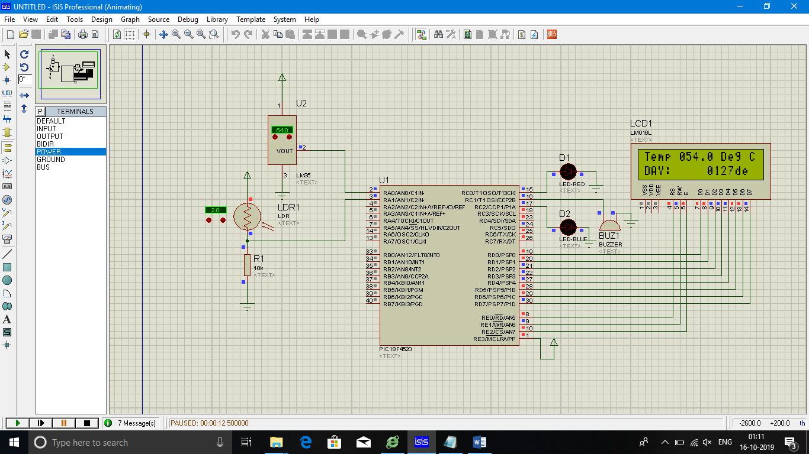
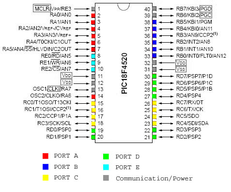
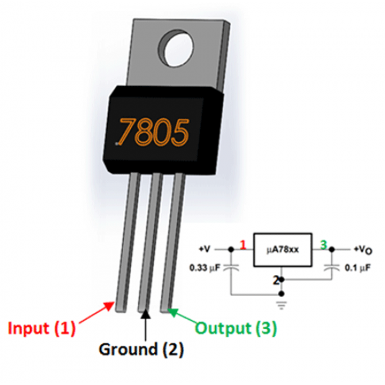

Implementation of LDR and Temprature Sensor on PIC microcontroller

In this project we will interfacing temprature sensor and LDR sensor and 16*2 LCD with PIC microcontroller.
Components Required:
- PCB
- PICF184520
- 16*2 LCD Display
- LM35 sensor
- LDR sensor
- Potentiometer
- Voltage regulator
- LED
- Buzzer
Circuit Diagram:
Measuring Temprature and Intensity of Light with LM35 and LDR using PIC Microcontroller:
PIC18F4520:
PIC18F4520 is a low-cost, low-power, high-speed 8-bit, fully-static Microcontroller unit with 40 pins, 36 of which can be used as I / O pins. It has power-on-reset (POR) and the WDT circuitry (Extended Watchdog Timer), which can be programmed for 4 ms to 131 s.
| Feature | PICF184520 |
|---|---|
| ROM (in bytes) | 32KB |
| RAM (bytes) | 1536 |
| Timers | 4(1 x 8-bit,3 x 16-bit) |
| I/O pins | 40 |
| No of I/O port | 36 |
| ADC Module | 10-bit, 13-channel |
| Communication Peripherals | 1 x USART, 1 x SPI, 1 x I2C |
| External Oscillator | Up to 40Mhz |
| Internal Osclliator | 8MHz, 32Khz |
| CPU Speed (MIPS) | 10 MIPS |
16*2 LCD:
16*2 LCD is a widely used display for embedded applications. Here is the brief explanation about pins and working of 16*2 LCD display. There are two very important registers inside the LCD. They are data register and command register. Command register is used to send commands such as clear display, cursor at home etc., data register is used to send data which is to be displayed on 16*2 LCD. Below table shows the pin description of 16*2 lcd.
| Pin | Symbol | I/O | Description |
|---|---|---|---|
| 1 | Vss | - | Ground |
| 2 | Vdd | - | +5V power supply |
| 3 | Vee | - | Power supply to control contrast |
| 4 | RS | I | RS=0 for command register,RS=1 for data register |
| 5 | RW | I | R/W=0 for write, R/W=1 for read |
| 6 | E | I/O | Enable |
| 7 | D0 | I/O | 8-bit data bus(LSB) |
| 8 | D1 | I/O | 8-bit data bus |
| 9 | D2 | I/O | 8-bit data bus |
| 10 | D3 | I/O | 8-bit data bus |
| 11 | D4 | I/O | 8-bit data bus |
| 12 | D5 | I/O | 8-bit data bus |
| 13 | D6 | I/O | 8-bit data bus |
| 14 | D7 | I/O | 8-bit data bus(MSB) |
| 15 | A | - | +5v for backlight |
| 16 | K | - | Ground |
The below table shows frequently used LCD command codes.
| Code(hex) | Description |
|---|---|
| 01 | Clear display screen |
| 06 | Increment cursor (right shift) |
| 0A | Display off , cursor on |
| 0C | Display on , cursor off |
| 0F | Display on , cursor blinking |
| 80 | Force the cursor to beginning of 1st line |
| C0 | Force the cursor to beginning of 2nd line |
| 38 | 2 lines and 5*7 matrix |
LM35 Temperature Sensor:
The LM35 is a temperature sensor whose output voltage is linearly proportional to Celsius temperature. The LM35 comes already calibrated hence requires no external calibration. It outputs 10mV for each degree of Celsius temperature.
LM35 sensor produces voltage corresponding to temperature. This voltage is converted to digital (0 to 256) by ADC0804 and it is fed to 8051 microcontroller. 8051 microcontroller converts this digital value into temperature in degree Celsius. Then this temperature is converted into ascii form which is suitable for displaying. This ascii values are fed to 16*2 lcd which displays the temperature on its screen. This process is repeated after specified interval.

LDR (light dependent resistor):
Two cadmium sulphide(cds) photoconductive cells with spectral responses
similar to that of the human eye. The cell resistance falls with increasing light
intensity. Applications include smoke detection, automatic lighting control,
batch counting and burglar alarm systems.
Photoconductive cells are used in many different types of circuits and
applications.
LM7805 (voltage regulator):
A voltage regulator is a system designed to automatically maintain a constant voltage level. A voltage regulator may use a simple feed-forward design or may include negative feedback. It may use an electromechanical mechanism, or electronic components.
Code:
#include <p18f4520.h> //Include controller specific .h file
#pragma config OSC = HS //Oscillator Selection
#pragma config WDT = OFF //Disable Watchdog timer
#pragma config LVP = OFF //Disable Low Voltage Programming
#pragma config PBADEN = OFF //Disable PORTB Analog inputs
//Declarations for LCD Connection
#define LCD_DATA PORTD //LCD data port
#define en PORTEbits.RE2 // enable signal
#define rw PORTEbits.RE1 // read/write signal
#define rs PORTEbits.RE0 // register select signal
#define LDR PORTAbits.RA0
#define Temp PORTAbits.RA1
#define led PORTCbits.RC0
#define buzzer PORTCbits.RC1
#define led1 PORTCbits.RC2
// register select signal
//Function Prototypes
unsigned int Get_ADC_Result(void); //Function to Get ADC result after conversion
void Start_Conversion(void); //Function to Start of Conversion
void msdelay (unsigned int time); //Function to generate delay
void init_LCD(void); //Function to initialise the LCD
void LCD_command(unsigned char cmd); //Function to pass command to the LCD
void LCD_data(unsigned char data); //Function to write character to the LCD
void LCD_write_string(static char *str);//Function to write string to the LCD
//Start of main program
void main()
{
char msg2[] = "Temp :";
char msg3[] = "NIGHT:";
char msg4[] = "DAY:";
unsigned char i,i1,i2,i3, Thousands,Hundreds,Tens,Ones;
unsigned int adc_val, k=0,adc_val11;
unsigned long Voltage, adc_val3;
float Voltage1, adc_val1,adc_val2;
int result,m, j;
float mV, Temp, Press;
ADCON1 = 0x0F; //Configuring the PORTE pins as digital I/O
TRISD = 0x00; //Configuring PORTD as output
TRISE = 0x00; //Configuring PORTE as output
TRISC = 0x00; //Configuring PORTC as output
TRISAbits.TRISA0 = 1; // RA0 is input
TRISAbits.TRISA1 = 1; // RA1 is input
TRISAbits.TRISA2 = 1; // RA2 is input
ADC_Init(); // Init ADC peripheral
init_LCD(); // Init LCD Module
LCD_command (0x8F); // Goto First line, 16th place of LCD
msdelay(15);
LCD_command (0x07); // Display shift left
// LCD_write_string(msg1); // Display Message
while(1)
{
if(k==0)
{
ADC_Init(); // Init ADC peripheral
LCD_command(0x01); // clear LCD
msdelay(15);
LCD_command(0x06); // Shift curser right
msdelay(15);
LCD_command (0x80); // Goto first line, 0th place of LCD
LCD_write_string(msg2); // Display Message
Start_Conversion(); //Trigger conversion
adc_val= Get_ADC_Result();//Get the ADC output by polling GO bit
Voltage = (long) adc_val*500.0; //Convert Binary result into temperature
adc_val = Voltage /1024.0;
LCD_command (0x85); //Goto 5th place on first line of LCD
i1 = adc_val/100 ;///Get the Hundreds place
Hundreds = i1 + 0x30; // Convert it to ASCII
LCD_data (Hundreds); //Display Hundreds place
i = ((adc_val)%100)/10; //Get the Tens place
Tens = i + 0x30; // Convert it to ASCII
LCD_data (Tens); //Display Tens place
i = adc_val%10 ; //Get the Ones place
Ones = i + 30; // Convert it to ASCII
LCD_data (i + 0x30); //Display Ones place
LCD_data ('.'); // Display decimal point
LCD_data ('0'); // Display 0 digit
LCD_data (' '); //
LCD_data ('D'); //
LCD_data ('e'); //
LCD_data ('g'); //
LCD_data (' '); //
LCD_data ('C'); //
if(adc_val > 50)
{
buzzer = 1;
for(j=0;j<6;j++)
led1=1;
msdelay(15);
led1=0;
msdelay(15);
}
else if(adc_val < 50)
{
buzzer = 0;
led = 0;
}
k=1;
msdelay(100); //Delay between conversions. It is a library function,refer delays.h file in MCC18 installation directory
}
else if (k==1)
{
ADC_Init1(); // Init ADC peripheral
LCD_command (0xC0); // Goto second line, 0th place of LCD
// Display Message
Start_Conversion(); //Trigger conversion
result = Get_ADC_Result(); // Get the humidity
if (result <100)
{
led=1;
LCD_write_string(msg3);
}
else
{
led=0;
LCD_write_string(msg4);
}
LCD_command (0xC9); //Goto 9th place on second line of LCD
i = result/1000 ; //Get the thousands place
Thousands = i + 0x30; // Convert it to ASCII
LCD_data (Thousands); // Display thousands place
i = (result%1000)/100; //Get the Hundreds place
Hundreds = i + 0x30; // Convert it to ASCII
LCD_data (Hundreds); //Display Hundreds place
i = (result%100)/10; //Get the Tens place
Tens = i + 0x30; // Convert it to ASCII
LCD_data (Tens); //Display Tens place
i = result%10 ; //Get the Ones place
Ones = i + 30; // Convert it to ASCII
LCD_data (i + 0x30); //Display Ones place
LCD_data ('d'); // Display d
LCD_data ('e'); // Display e
LCD_data ('c'); // Display c
k=0;
msdelay(100);
}
}
}
void Start_Conversion()
{
ADCON0bits.GO=1;
}
//If you do not wish to use adc conversion interrupt you can use this
//to do conversion manually. It assumes conversion format is right adjusted
unsigned int Get_ADC_Result()
{
unsigned int ADC_Result=0;
while(ADCON0bits.DONE);
ADC_Result=ADRESL;
ADC_Result|=((unsigned int)ADRESH) << 8;
return ADC_Result;
}
void msdelay (unsigned int time) //Function to generate delay
{
unsigned int i, j;
for (i = 0; i < time; i++)
for (j = 0; j < 710; j++);//Calibrated for a 1 ms delay in MPLAB
}
void init_LCD(void) // Function to initialise the LCD
{
LCD_command(0x38); // initialization of 16X2 LCD in 8bit mode
msdelay(15);
LCD_command(0x01); // clear LCD
msdelay(15);
LCD_command(0x0C); // cursor off
msdelay(15);
LCD_command(0x06); // curser right shift
msdelay(15);
}
void LCD_command(unsigned char cmd) //Function to pass command to the LCD
{
LCD_DATA = cmd; //Send data on LCD data bus
rs = 0; //RS = 0 since command to LCD
rw = 0; //RW = 0 since writing to LCD
en = 1; //Generate High to low pulse on EN
msdelay(15);
en = 0;
}
void LCD_data(unsigned char data)//Function to write data to the LCD
{
LCD_DATA = data; //Send data on LCD data bus
rs = 1; //RS = 1 since data to LCD
rw = 0; //RW = 0 since writing to LCD
en = 1; //Generate High to low pulse on EN
msdelay(15);
en = 0;
}
//Function to write string to LCD
void LCD_write_string(static char *str)
{
int i = 0;
while (str[i] != 0)
{
LCD_data(str[i]); // sending data on LCD byte by byte
msdelay(15);
i++;
}
}